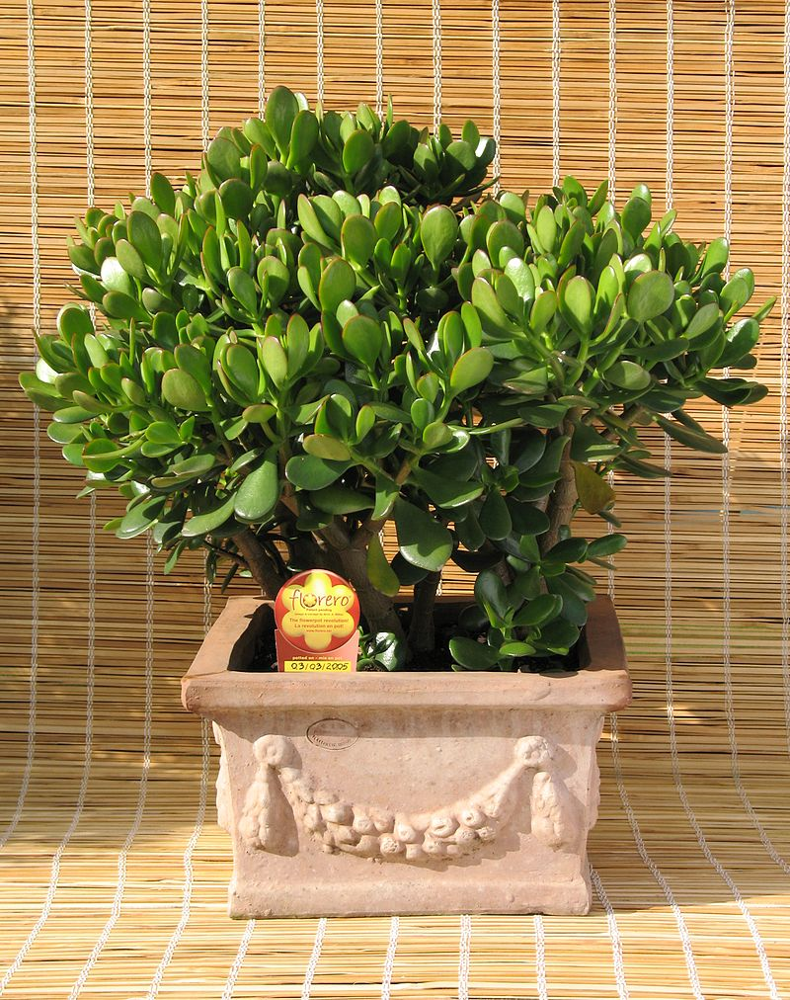

Толстя́нка (лат. Crássula) — род суккулентных растений семейства Толстянковые. Включает в себя от 300 до 350 видов.
Представители этого рода крайне разнообразны по внешнему облику. Большинство видов — многолетние растения, часто с монокарпическими побегами, от нескольких сантиметров до 3—4 метров высотой.
Листья супротивные, у многих видов собраны в прикорневую розетку, простые, цельнокрайные, нередко реснитчатые, в основании свободные или сросшиеся.
Цветки маленькие, белые, беловатые, желтоватые, редко красные, очень редко голубоватые, в конечных или боковых метельчато-зонтиковидных или кистевидных соцветиях, реже цветки одиночные пазушные, обычно пятичленные.
Тычинок столько же, сколько лепестков, расположены супротивно лепесткам. Пыльники яйцевидные или продолговатые. Нектарные чешуйки маленькие. Плодолистики свободные или сросшиеся в основании. Столбики короче завязи.